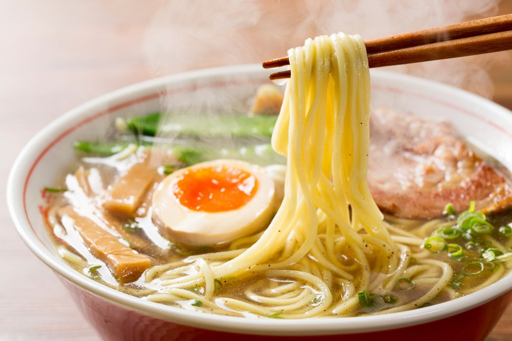

라멘(일본어: ラーメン, 영어: Ramen)은 면과 국물로 이뤄진 일본의 대중 음식이다. 납면을 이용한 중국의 국수 요리인 라몐을 기원으로 한 면요리로서 면과 국물, 그 위에 돼지고기(챠슈), 파, 삶은 달걀 등의 여러 토핑을 얹는데, 지역이나 점포에 따라 다양한 종류가 있다. 일본에는 국민 음식이라 할 만큼 인기가 있으며, 일본 외에도 지명도가 높은 일식이다.
'지나소바(支那そば)', '주카소바(中華そば)' 또는 '남경(南京)소바'라고 불리다가, 1958년에 사업가 안도 모모후쿠(安藤百福)가 개발한 인스턴트 라멘인 '닛신(日淸) 치킨 라멘'이 일본 전역에서 인기를 끌면서 '라멘'이라는 이름이 대중적으로 정착되었다.[4] 대개는 가타가나로 'ラーメン'이라고 표기하는 것이 보통이다. 일반적으로 일본식 된장으로 맛을 낸 '미소 라멘', 간장으로 맛을 낸 '소유 라멘', 소금으로 맛을 낸 '시오 라멘', 돼지뼈로 맛을 낸 '돈코츠 라멘(豚骨ラーメン)' 등이 대표적이다.